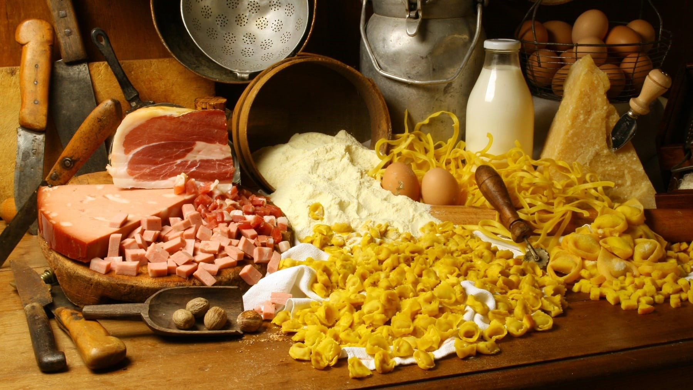

La cucina reggiana è l'insieme delle specialità culinarie caratteristiche della provincia di Reggio nell'Emilia.
Nonostante ci siano varie differenze tra la cucina reggiana montanara e di pianura, di seguito possiamo trovare, nelle pagine correllate alle varie voci, alcuni tra i suoi principali piatti:
